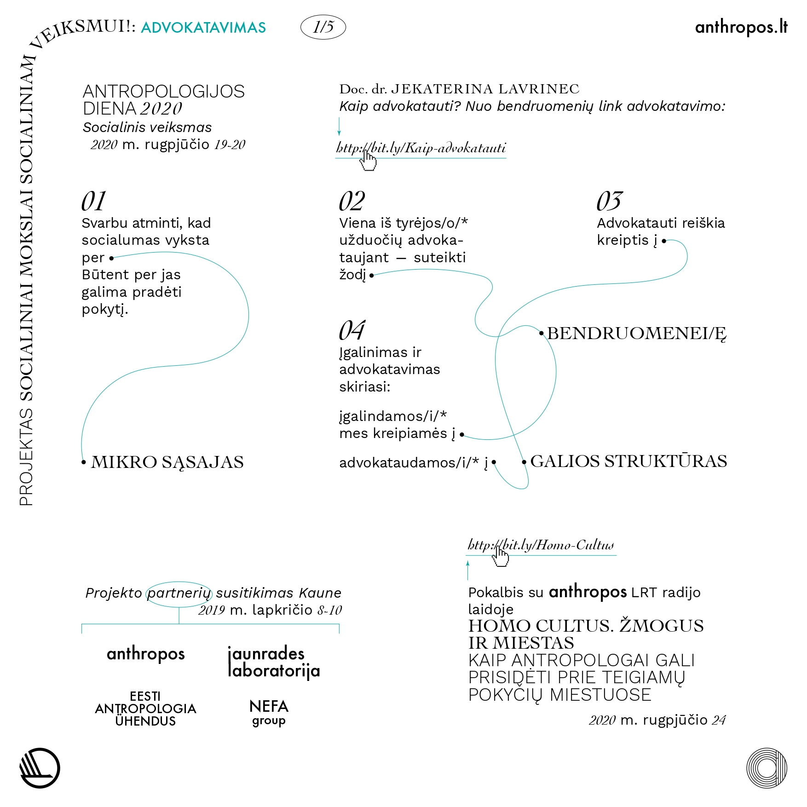
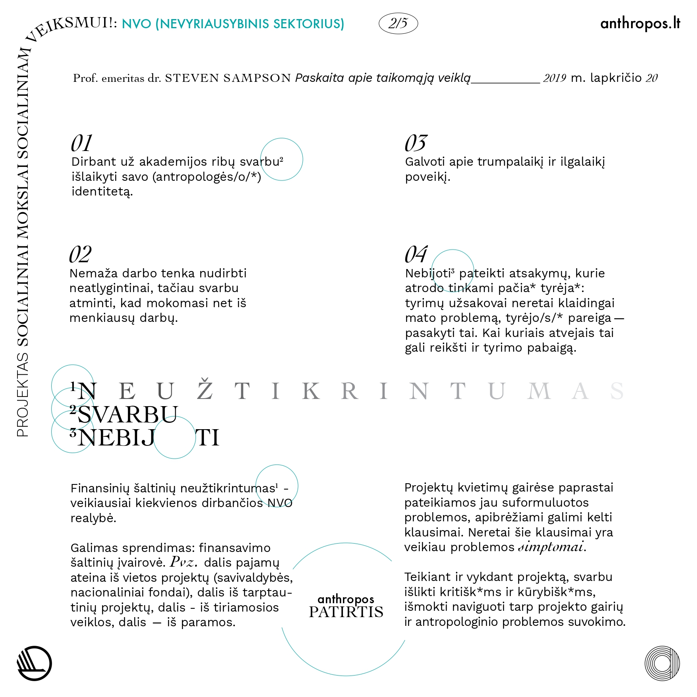
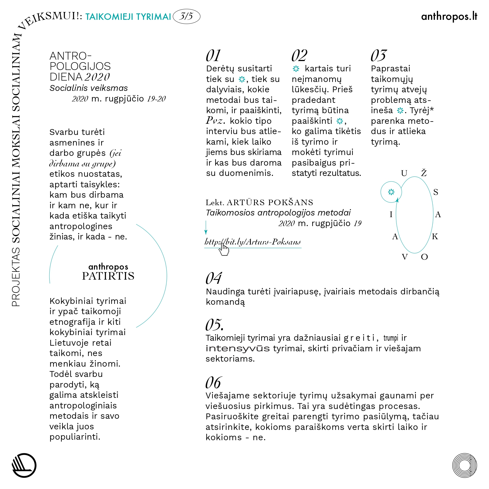
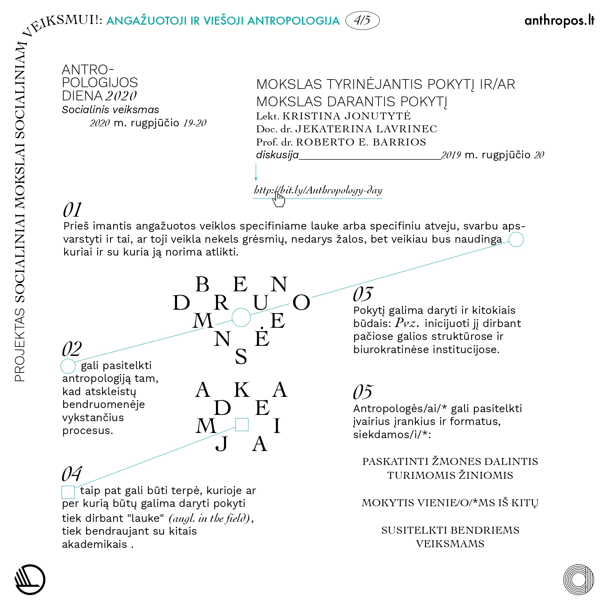
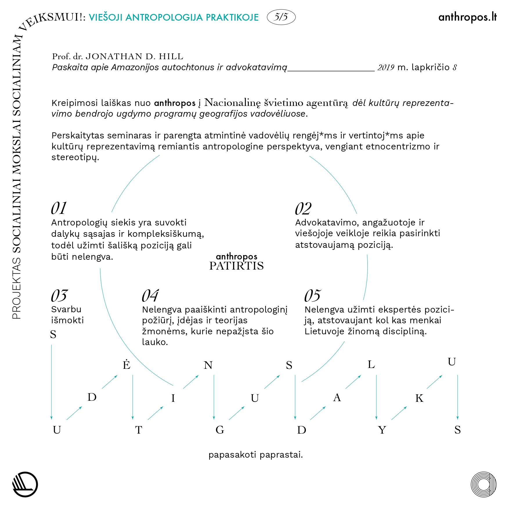
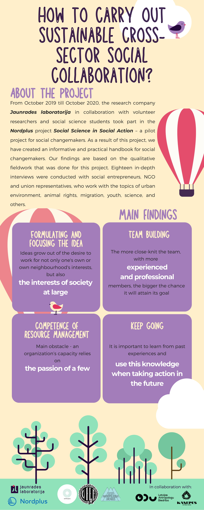
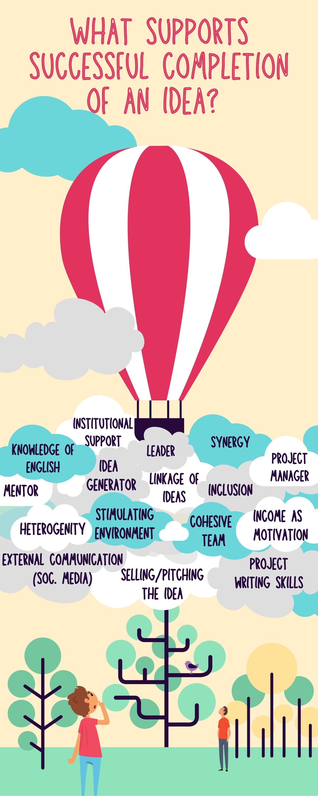
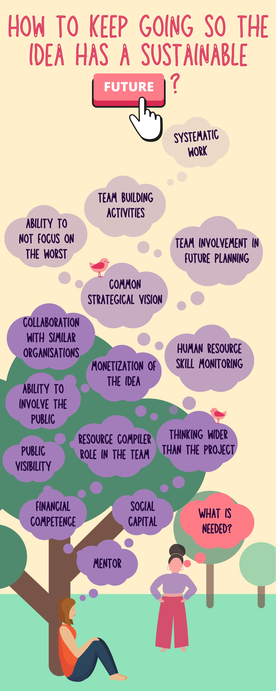
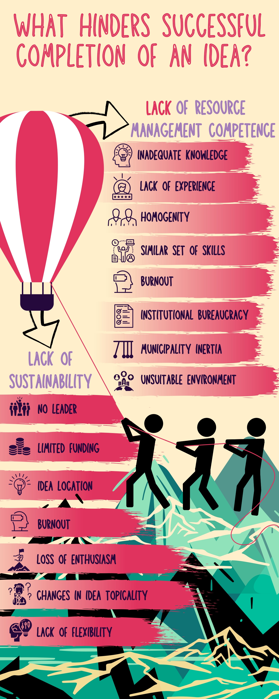

3. IŠMOKTOS PAMOKOS: ADVOKATAVIMAS, NVO SEKTORIUS, TAIKOMIEJI TYRIMAI, ANGAŽUOTOJI IR VIEŠOJI ANTROPOLOGIJA (Lietuva)
Čia galite atsisiųsti Lietuvos parengtą dalį .pdf formatu (LT): Atsisiųsti / Download
    
Parengė „Anthropos”, dizainas: Tauras Stalnionis
2. KUR PRITAIKYTI ANTROPOLOGINES ŽINIAS? PRIVALUMAI IR IŠŠŪKIAI (Estija)
Čia galite atsisiųsti Estijos parengtą dalį .pdf formatu (EE): Atsisiųsti / Download
Parengė Tartu Nefa ir Estijos antropologijos asociacija, dizainas: Ave Taavet
1. KAIP VYKDYTI TVARŲ TARPSEKTORINĮ SOCIALINĮ BENDRADARBIAVIMĄ? (Latvija)
Čia galite atsisiųsti Latvijos parengtą dalį .pdf formatu (EN): Atsisiųsti / Download
   
Parengė Jaunrades Labaratorija, dizainas: Anna Luīze Bērziņa
VISOS MŪSŲ PUBLIKACIJOS
TAIKOMOSIOS ANTROPOLOGIJOS ORGANIZACIJA „ANTHROPOS“
Registracijos kodas: 304743335
PVM mokėtojo kodas: LT100018477116*
Registracijos adresas: Laisvės al. 110, LT-44253, Kaunas, Lietuva
Banko sąskaita: Luminor LT 20 4010 0510 0419 3055
El. paštas: taikomoji.antropologija@gmail.com
Mob. telefono nr.: +37065350308 (Ugnė Barbora Starkutė)
* PVM neskaičiuojamas. Taikoma smulkaus verslo schema Lietuvoje.
{kind=link}
{kind=link}
{kind=link}
{kind=link}
{kind=link}
{kind=link}
{kind=link}
{kind=link}
{kind=link}
{kind=link}